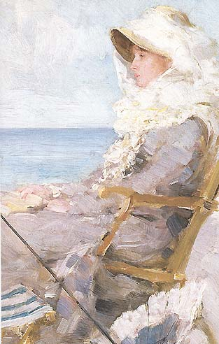
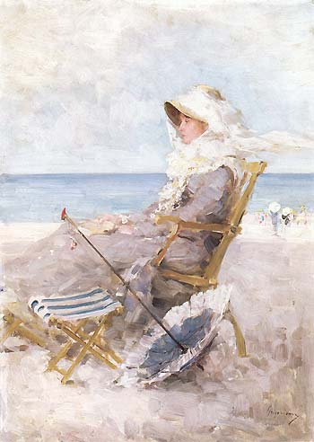
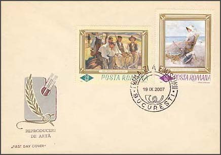
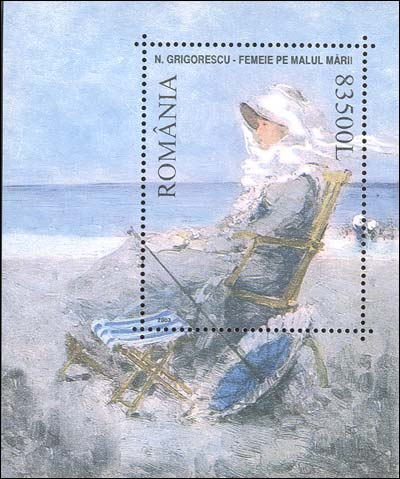

| The National Museum of Art of Romania By the Sea, by Nicolae Grigorescu |
The classical Romanian painter Nicolae Grigorescu was born 1838 at Pitaru and died in the year 1907 at Campina. He is considered the founder of the modern Romanian school. He was the first Romanian painter to develop a consistent approach closely linked to a personal style. Grigorescu is renown as the fine painter of the peasants' life in Muntenia (Wallachia), a province of Romania. His canvases inspired by country life capture the national character under various guises and mark the beginning of what was to become a genuine tradition for the artists of the following generations.

Probably painted on the French shore of the English Channel, this picture is one of the few sea pieces ever produced by Grigorescu. It was painted between 1880 and 1885. I have discovered it by chance in 2001, during a visit of the National Museum. It suddenly revealed to me the fact that the great classical painter was actually rather our contemporary, and not an artist from a distant past. I liked the image of these beautiful and elegant lady so much that I decided, it should absolutely be displayed on a stamp.
 |
 |
The manner in which the atmosphere is rendered, the fluid, transparent quality of the paint, the spontaneous brushwork as well as the character's feature and stance are all reminiscent of Impressionism. Yet in Grigorescu's paintings tonus do not dissolve into the air, the fore-, middle-, and background do not blend, on the contrary, they retain their own individuality.

The shore, the sea and the sky are clearly delineated, allowing the onlooker to rejoice at the ambiance. This is yet another proof of the creative war in which the painter assimilated just those features which befitted his own artistic temperament from novel contemporary trends. Meanwhile his approach never relied on the imitation of a particular formula, thereby preserving its own originality. (After Dana Herbay).
The stamp, shown on the FDC, as the sheet, will be issued in 2007, in commemoration of artist's death centenary. This is the first set in the world philately that is shown long before its official appearance. The print run of the stamp will be of 300,000 pieces, and as much this stamps, as the 150,000 sheets, will be freely available at post offices. The prices of these stamps will correspond to the level of general prices in 2007, which means that a deflation of the Romanian currency will take place (at 1 Leu = 100,000 old Lei). The stamps were created by the stamp designer Victor Manta, the main artist of and permanently under contract with the SNA postal administration. Please notice that on the FDC the classical work of Camil Ressu (1880 - 1962), "Harvesters at Rest", will be also reissued, this time in its original colors. And never forget that stamps are for fun!
I had a nice surprise during my recent visit to Bucharest. As usually, I have visited the official philatelic shop, and there I have found the sheet of my dreams. It is exactly the painting that I have shown above, on a sheet, but issued in 2003 and not in 2007. Romanian post, chapeau!

Just to mention that Grigorescu has created hundreds of paintings, so that the fact that the Romanian PA and myself have decided ourselves for the same work is a wonderful and remarkable coincidence.
For some supplementary information please move the mouse pointer over the images.
| Published:
07/21/2002. Revised: 03/10/2010 . Copyright © 2002 - 2010 by Victor Manta, Switzerland. All rights reserved worldwide. |